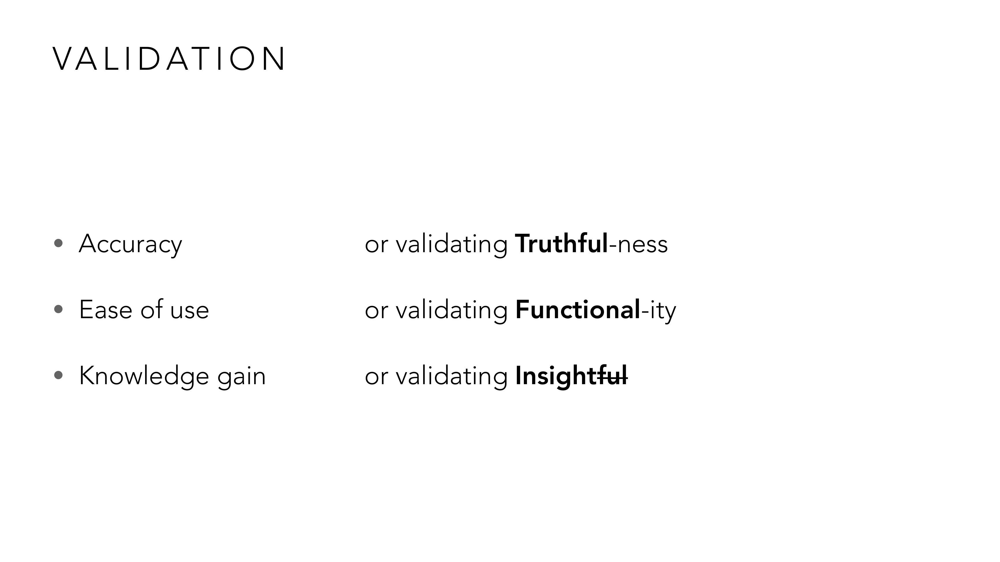
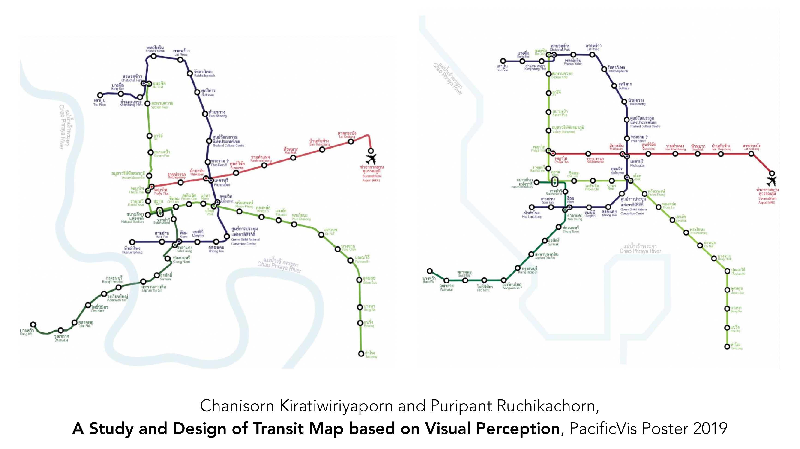
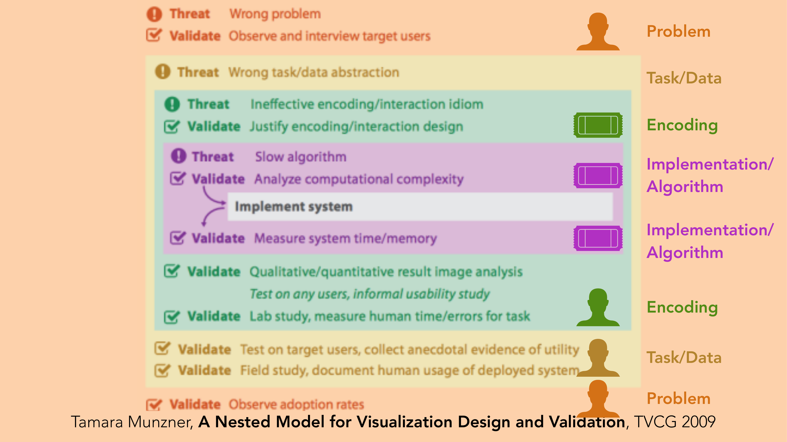
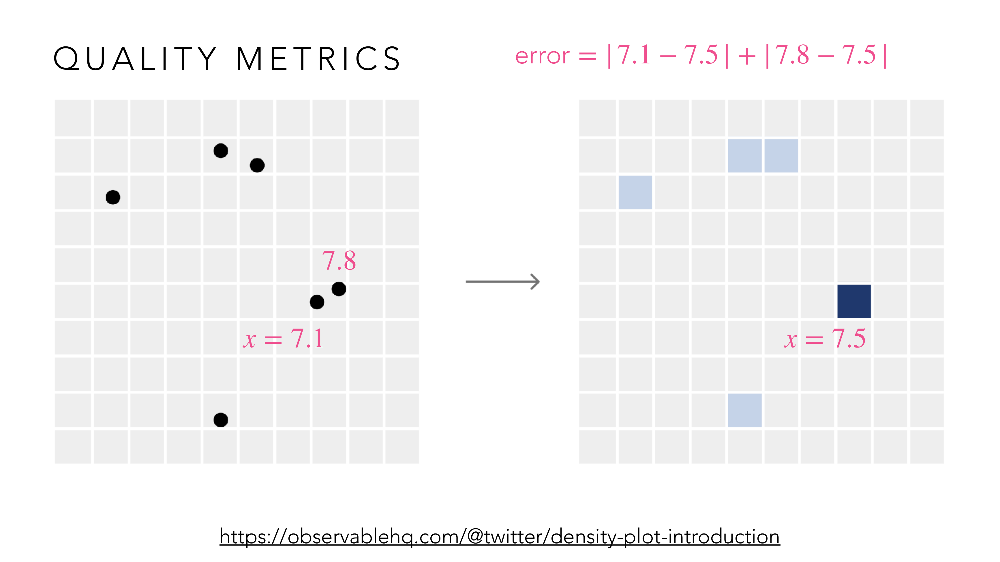
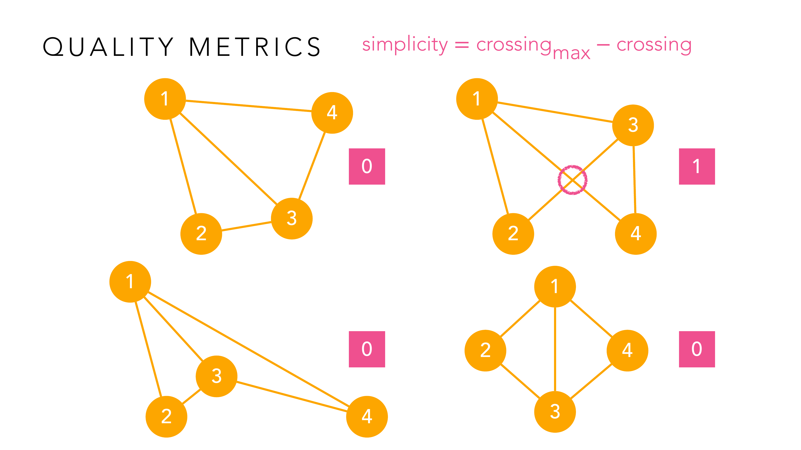
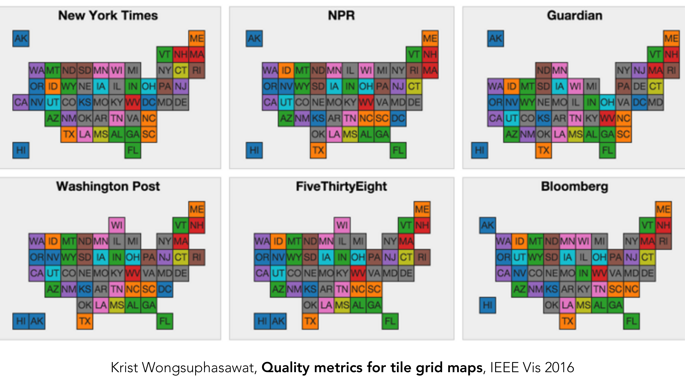
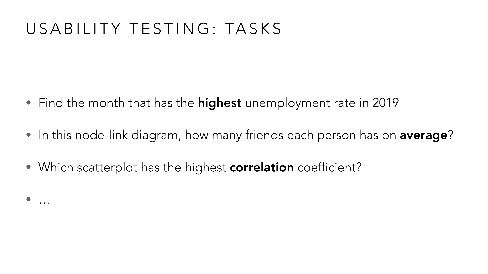
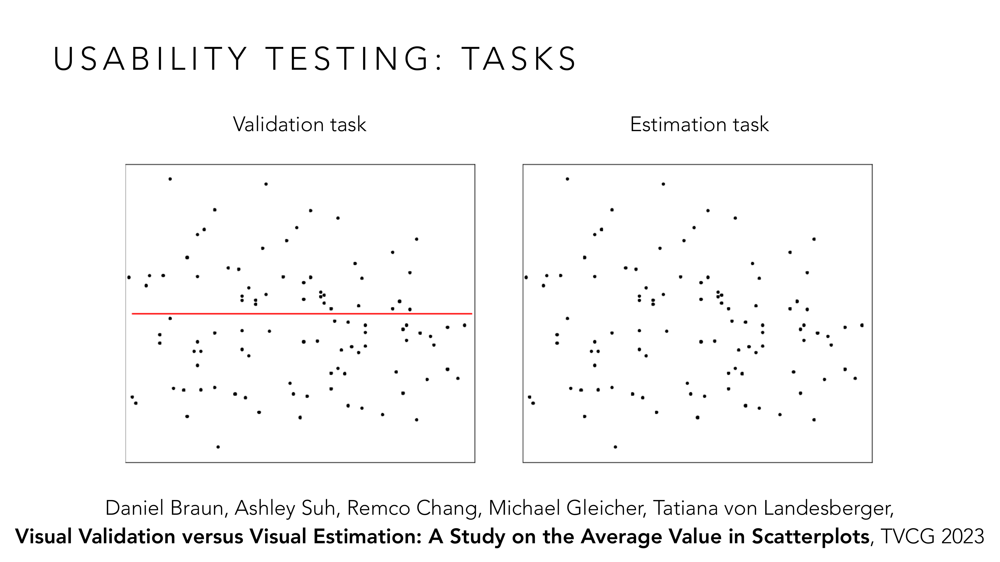
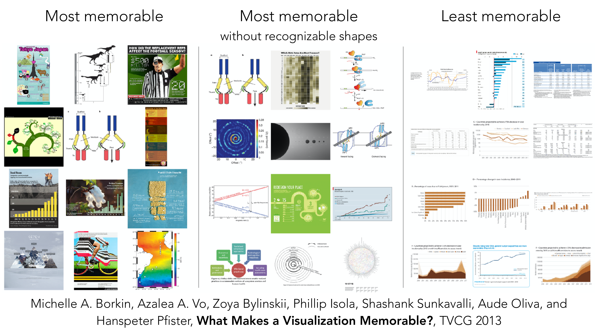
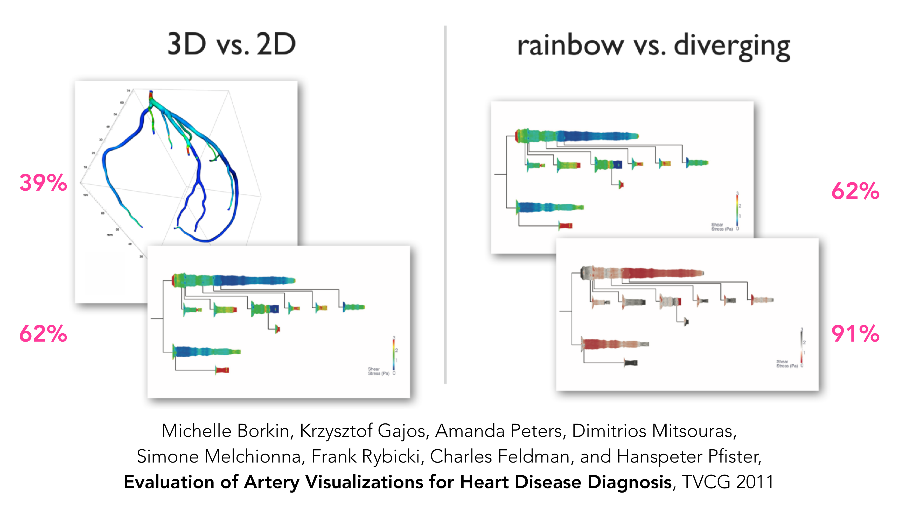

vis-11-validation.pdf
เราทำ visualization มา 10 บทแล้ว แต่ยังไม่เคยถามคำถามสำคัญ: "แล้วมันดีจริงไหม" บทนี้ให้เครื่องมือตอบคำถามนั้นอย่างเป็นระบบ — ไม่ใช่แค่ "ดูสวยดี" แต่วัดได้ด้วยตัวเลข ทดสอบได้กับผู้ใช้จริง และมีกรอบคิดที่บอกได้ว่า "ผิดพลาดตรงไหนในกระบวนการออกแบบ".
จำกรอบ Effective/Convincing/Insightful (หรือ Functional/Truthful/Insightful) จาก Lesson 1 ได้ไหม? Validation คือการเอากรอบนั้นมาวัดจริง ไม่ใช่แค่พูดลอย ๆ:

สังเกตวิธีจับคู่คำ: "Accuracy" คือการวัดว่า visualization ยัง Truthful อยู่ไหม (ตัวเลขที่แสดงตรงกับข้อมูลจริงแค่ไหน) "Ease of use" คือวัด Functional-ity (ผู้ใช้ใช้งานได้จริงไหม ไม่ใช่แค่ทฤษฎีสวยแต่ใช้ยาก) และ "Knowledge gain" คือวัด Insight (ผู้ใช้ได้ความรู้ใหม่จากมันจริงไหม) — 3 แกนนี้แต่ละแกนต้องการวิธีวัดที่ต่างกันโดยสิ้นเชิง อย่างที่จะเห็นในหัวข้อถัดไป: แกนแรกวัดด้วย quality metrics (ตัวเลขคำนวณได้) ส่วนสองแกนหลังต้องใช้ usability testing (ทดสอบกับคนจริง).
อาจารย์ยกงานวิจัยของตัวเองมาเป็นตัวอย่างว่า validation เปลี่ยนการออกแบบจริงได้อย่างไร:

แผนที่รถไฟฟ้ากรุงเทพฯ ทางซ้ายคือเส้นทางจริงตามภูมิศาสตร์ (โค้งเลี้ยวตามถนนจริง) ส่วนทางขวาคือฉบับออกแบบใหม่ที่ยืดเส้นทางให้ตรง/เอียงมุมคงที่ (สไตล์ Vignelli แบบแผนที่รถไฟใต้ดินลอนดอน/นิวยอร์ก) — งานวิจัยนี้ใช้หลักการรับรู้ทางสายตา (visual perception) มาออกแบบเวอร์ชันขวาอย่างมีหลักการ ไม่ใช่แค่ "ยืดให้ตรงเพราะดูเรียบร้อยกว่า" นี่คือตัวอย่างว่างานวิจัย validation ไม่ได้อยู่แค่ในตำรา — มันคือสิ่งที่อาจารย์เองก็ทำวิจัยอยู่ และนำมาสอนต่อในห้องเรียนนี้.
กรอบคิดสำคัญที่สุดของบทนี้ — โมเดลนี้บอกว่า visualization ทุกชิ้นสร้างผ่าน 4 ชั้นซ้อนกัน และแต่ละชั้นมีจุดที่ผิดพลาดได้ (Threat) กับวิธีตรวจสอบของตัวเอง (Validate):

ไล่จากนอกสุดเข้าใน: ชั้น Problem — Threat คือ "แก้ปัญหาผิดตัว" วิธี validate คือไปสัมภาษณ์/สังเกตผู้ใช้เป้าหมายจริง ๆ ชั้น Task/Data — Threat คือ "เข้าใจ task/data ผิด" ชั้น Encoding/Interaction — Threat คือ "เลือก encoding ที่ไม่มีประสิทธิภาพ" validate ด้วยการอธิบายเหตุผลของ design (justify) หรือทำ lab study วัดเวลา/ความผิดพลาดของผู้ใช้จริง ชั้นในสุด Algorithm — Threat คือ "algorithm ช้าเกินไป" validate ด้วยการวิเคราะห์ computational complexity หรือวัดเวลา/memory จริงหลัง implement ประเด็นสำคัญที่สุด: ถ้าเข้าใจ "Problem" ผิดตั้งแต่ชั้นนอกสุด ต่อให้ทุกชั้นในทำถูกหมด (algorithm เร็ว, encoding สวย) มันก็ยังเป็น visualization ที่ผิด เพราะแก้ปัญหาที่ไม่มีใครมีจริง — ผิดพลาดชั้นนอกทำให้ทุกชั้นในไร้ความหมาย ไม่ใช่กลับกัน.
Quality metrics คือวิธี validate แกน "Accuracy" (Truthful-ness) แบบไม่ต้องใช้คนทดสอบเลย — คำนวณจากตัวข้อมูล/ภาพโดยตรง ตัวอย่างแรก: วัดว่า binning/aggregation (เช่น density plot, heatmap) ยัง "ซื่อสัตย์" กับข้อมูลดิบแค่ไหน:

สมมติมีจุดข้อมูลจริงที่ x=7.1 และ x=7.8 ทั้งสองจุดตกอยู่ใน bin เดียวกันซึ่งมีจุดกึ่งกลางที่ x=7.5 (ตัวเลขบนแกน x คือค่ากึ่งกลาง bin หลังการ aggregate) — คำถามคือ "การเอาทั้ง bin ไปแทนด้วยจุดเดียวที่ 7.5 มันเพี้ยนจากความจริงไปแค่ไหน" คำนวณ error = |7.1 − 7.5| + |7.8 − 7.5| = 0.4 + 0.3 = 0.7 แล้วสูตร faithfulness = 1 − (error รวมของทุก bin ÷ (n × half bin size)) จะแปลงค่า error นี้ให้เป็นคะแนน 0 ถึง 1 — ยิ่ง error สะสมน้อย (จุดข้อมูลอยู่ใกล้จุดกึ่งกลาง bin ของตัวเอง) faithfulness ยิ่งเข้าใกล้ 1 นี่คือตัวอย่างที่แสดงว่า "ความสวยงาม" ของ binned chart ไม่ได้แปลว่ามันซื่อสัตย์กับข้อมูลดิบเสมอไป ยิ่ง bin กว้าง ยิ่งเสีย faithfulness มากขึ้นเรื่อย ๆ แม้ภาพจะดูเรียบร้อยกว่า.
ตัวอย่างที่สอง: วัดความ "เรียบง่าย" ของ graph/network layout ด้วยจำนวนเส้นตัดกัน (edge crossing) — ยิ่งเส้นตัดกันน้อย ยิ่งอ่านง่าย:

กราฟทั้ง 4 ผังนี้คือโหนด {1, 2, 3, 4} ชุดเดียวกัน เชื่อมด้วยเส้นชุดเดียวกัน แต่จัดตำแหน่ง (layout) ต่างกัน — ผังบนซ้ายและล่างทั้งสองมี crossing = 0 (ไม่มีเส้นไหนตัดกันเลย อ่านง่ายสุด) ส่วนผังบนขวามี crossing = 1 (เส้น 1-3 กับเส้น 2-4 ตัดกันตรงกลาง อ่านยากกว่านิดหน่อย) โน้ตกำกับว่าสูตรที่แม่นกว่าคือ simplicity = 1 − (crossing ÷ crossingmax) ซึ่งทำให้ตัวเลขเทียบกันข้ามกราฟขนาดต่างกันได้ (ไม่ใช่แค่นับ crossing ดิบ ๆ) — ข้อคิดสำคัญ: ข้อมูล (โหนด/เส้น) เหมือนกันทุกประการ แต่แค่จัดตำแหน่งใหม่ ก็เปลี่ยนคะแนนคุณภาพได้ทันที นี่คือเหตุผลที่ graph layout algorithm (เช่น force-directed) พยายามลด crossing ให้น้อยที่สุด.
quality metrics ไม่ได้จำกัดแค่ทฤษฎี — มันถูกใช้เทียบของจริงระหว่างสำนักข่าวได้ด้วย เช่น tile grid map ของสหรัฐฯ ที่แต่ละสำนักออกแบบเอง:

ทั้ง 6 แผนที่นี้พยายามทำสิ่งเดียวกัน: จัดทั้ง 50 รัฐของสหรัฐฯ ลงตารางสี่เหลี่ยมขนาดเท่ากัน แต่แต่ละสำนัก (NYT, NPR, Guardian, Washington Post, FiveThirtyEight, Bloomberg) จัดตำแหน่งรัฐต่างกันเล็กน้อย (สังเกตตำแหน่งของ MI, WI, หรือการจัดกลุ่มแถบตะวันออกเฉียงเหนือ) — งานวิจัยนี้เสนอ 3 metric วัดคุณภาพของแต่ละผัง ได้แก่ recall สูงสุด (คนจำตำแหน่งรัฐถูกมากสุด) inaccuracy ต่ำสุด (คลาดเคลื่อนจากตำแหน่งภูมิศาสตร์จริงน้อยสุด) และ misdirection น้อยสุด (ไม่ทำให้เข้าใจทิศทาง/ความสัมพันธ์ผิด) — ข้อคิด: ไม่มีผังไหน "ถูกที่สุด" แบบสมบูรณ์ เพราะ recall กับ inaccuracy มักแลกกันเอง (ยิ่งจัดให้ตรงภูมิศาสตร์ ยิ่งอาจจำยากขึ้น) การมี metric ทำให้เทียบผังต่าง ๆ ได้อย่างเป็นกลาง แทนที่จะเถียงกันด้วยความรู้สึก.
"Ease of use" กับ "Knowledge gain" วัดด้วยสูตรคณิตศาสตร์ไม่ได้ — ต้องเอาคนจริงมาทดสอบ กระบวนการมี 3 ขั้นตอน เริ่มจาก Define tasks: ต้องตั้งคำถามที่มีคำตอบชัดเจนตรวจสอบได้ (closed-ended):

สังเกตว่าทั้ง 3 คำถามตัวอย่างนี้มีคำตอบเดียวที่ถูกต้องแน่นอน ("เดือนไหน" "ค่าเฉลี่ยเท่าไหร่" "scatterplot ไหน") — ไม่ใช่คำถามเปิดแบบ "คุณคิดยังไงกับภาพนี้" เพราะถ้าคำตอบไม่ชัดเจน จะวัด "ผู้ใช้ตอบถูกกี่ % ใช้เวลาเท่าไหร่" ไม่ได้เลย นี่คือหลักการเดียวกับ closed-ended question จาก Sensemaking ใน Lesson 10 — usability test ต้องใช้คำถามปิดเพื่อวัดผลได้ ส่วนคำถามเปิด (ทำไม/อย่างไร) เก็บไว้ใช้ตอนสัมภาษณ์หลัง task เสร็จแทน.
คำถามปิดยังแบ่งชนิดย่อยได้อีก งานวิจัยปี 2023 นี้แยกความต่างระหว่าง "Validation task" กับ "Estimation task" ชัดเจนมาก:

ทั้งสอง scatterplot มีจุดข้อมูลชุดเดียวกันทุกประการ ต่างกันแค่วิธีถาม: scatterplot ซ้าย ("Validation task") มีเส้นแดงลากไว้แล้ว คำถามคือ "เส้นนี้คือค่าเฉลี่ยใช่ไหม" — ผู้ใช้แค่ตัดสิน ใช่/ไม่ใช่ ส่วน scatterplot ขวา ("Estimation task") ไม่มีเส้นให้เลย คำถามคือ "ค่าเฉลี่ยอยู่ตรงไหน" — ผู้ใช้ต้องประเมินขึ้นมาเองจากศูนย์ งานวิจัยพบว่าความแม่นยำของทั้งสอง task ต่างกันอย่างมีนัยสำคัญ แม้ข้อมูลตั้งต้นจะเหมือนกันเป๊ะ — บทเรียนคือ "วิธีถามคำถาม" มีผลต่อผลลัพธ์การทดสอบพอ ๆ กับตัว visualization เอง ถ้าออกแบบ task ผิดชนิด อาจวัดคุณภาพ chart ผิดไปเลย.
ขั้นที่สองของ usability testing คือหาผู้ใช้มาทดสอบ ข่าวดีคือไม่ต้องสุ่มตัวอย่างอย่างเข้มงวดแบบงานวิจัยสถิติ — Convenience sampling (ชวนเพื่อน/ครอบครัวมาทดสอบ) และ Snowball sampling (ให้เพื่อนช่วยชวนเพื่อนของเพื่อนต่อ) เป็นวิธีที่ยอมรับได้ในบริบทนี้ ไม่มีเกณฑ์ include/exclude ที่เข้มงวด — แต่มีข้อควรระวังสำคัญข้อหนึ่ง: ถ้ามีหลาย prototype ห้าม re-test กลุ่มผู้ใช้เดิมซ้ำ เพราะเกิด "learning effect" — ผู้ใช้จะทำ task ได้ดีขึ้นเรื่อย ๆ จากการฝึกฝน ไม่ใช่เพราะ prototype เวอร์ชันหลังดีขึ้นจริง ทำให้ผลเปรียบเทียบระหว่าง prototype เพี้ยนไป จำนวนผู้ใช้ที่ต้องมีก็ไม่จำเป็นต้องเยอะ: Jakob Nielsen (1993) เสนอว่าแค่ ~5 คนก็เจอปัญหา usability ส่วนใหญ่แล้ว เพราะผลตอบแทนของผู้ใช้เพิ่มแต่ละคนลดลงเรื่อย ๆ หลังจากนั้น.
ขั้นสุดท้ายคือการทดสอบจริง — มีกฎสำคัญที่ผิดง่ายมาก: บอกผู้ใช้ก่อนเริ่มว่า "กำลังทดสอบตัวระบบ ไม่ได้ทดสอบตัวคุณ" และ "ถ้าติดขัด นั่นคือความผิดของระบบ ไม่ใช่ของคุณ" เพื่อลดความกดดัน จากนั้นให้ผู้ใช้พูดความคิดออกมาดัง ๆ ระหว่างทำ (think aloud) ส่วนตัวผู้ทำการทดสอบต้องเงียบ — ห้ามช่วย ห้ามอธิบาย ห้ามชี้จุดที่ผู้ใช้ทำผิด แม้จะเห็นชัดเจนก็ตาม ถ้าผู้ใช้ติดขัดจริง ๆ ให้ข้ามไป task ถัดไปเลย เหตุผลคือ ถ้าช่วยแม้แต่นิดเดียว ข้อมูลที่เก็บได้จะไม่สะท้อนพฤติกรรมการใช้งานจริงอีกต่อไป — จุดที่ผู้ใช้สับสนหรือทำพลาดคือข้อมูลที่มีค่าที่สุดของการทดสอบทั้งหมด ไม่ใช่สิ่งที่ควรรีบแก้ไขระหว่างทาง.
"Knowledge gain" ไม่ได้จบแค่ตอนดูภาพ — ถ้าจำไม่ได้ ความรู้ก็ไม่ persist งานวิจัยนี้ทดสอบภาพหลายร้อยภาพแล้วดูว่าอะไรทำให้คนจำได้นานกว่า:

คอลัมน์ซ้าย ("Most memorable") เต็มไปด้วย infographic สีสันจัดจ้าน มีภาพประกอบเฉพาะตัว (ไดโนเสาร์ นักฟุตบอล แผนที่ธารน้ำแข็ง) — จำง่ายเพราะมีเอกลักษณ์ทางสายตาที่ไม่เหมือนภาพอื่น คอลัมน์ขวา ("Least memorable") กลับเต็มไปด้วย bar chart, line chart, ตารางตัวเลขทั่วไปที่ดู "ถูกต้องตามหลักวิชา" ทุกอย่าง (สี minimal, ไม่มี chartjunk) แต่กลับจำไม่ได้เลย เพราะมันหน้าตาเหมือนกันหมดกับ chart อื่นนับพันที่เคยเห็นมา — ข้อคิดที่ขัดกับสัญชาตญาณ: หลักการออกแบบที่ "สะอาด เรียบง่าย ไม่มีของประดับ" (ที่เราเรียนมาตลอดคอร์สว่าคือ "ดี") อาจไม่ได้แปลว่า "จดจำได้" เสมอไป — บางครั้ง visual uniqueness (แม้จะดูเหมือน chartjunk) กลับช่วยให้ knowledge อยู่ในความจำระยะยาวได้ดีกว่า นี่คือเหตุผลที่คอลัมน์กลางแสดงว่าแม้ไม่มีรูปทรงที่จำได้ทันที (ไม่ใช่ infographic ที่มีรูปวาด) แต่ยังจำได้ ถ้ามีโครงสร้างภาพที่แปลกตาไม่ซ้ำใคร.
ตัวอย่างสุดท้ายเชื่อมทุกอย่างเข้าด้วยกัน: usability test ที่วัด "Accuracy" ของการวินิจฉัยโรคจริง ไม่ใช่แค่ทดลองทั่วไป:

นี่คือ usability test ที่มีเดิมพันสูงมาก: หมอวินิจฉัยโรคหลอดเลือดหัวใจจากภาพ ผลออกมาสวนทางกับสัญชาตญาณสองเรื่อง เรื่องแรก มุมมอง 3D (ที่ดู "ล้ำ" และให้ข้อมูลเชิงพื้นที่ครบกว่า) ให้ความแม่นยำในการวินิจฉัยแค่ 39% ในขณะที่มุมมอง 2D แบบเรียบง่ายกลับแม่นยำถึง 62% — เพราะ 3D มีปัญหาบดบังกันเอง (occlusion) และ perspective ทำให้ตีความระยะยากกว่าที่คิด เรื่องที่สอง: colormap แบบ rainbow (ที่ใช้กันแพร่หลายเพราะดูมีสีสันครบ) ให้ความแม่นยำแค่ 62% เทียบกับ colormap แบบ diverging (สองสีไล่เฉดจากกึ่งกลาง) ที่แม่นยำถึง 91% — ตรงกับสิ่งที่เรียนมาตั้งแต่ Lesson 2 ว่า rainbow colormap มีปัญหาเรื่อง perceptual uniformity (แต่ละสีในสายตามนุษย์ไม่ได้ "ห่างกันเท่ากัน" ตามค่าตัวเลขจริง) แต่ที่นี่ตัวเลขนี้ไม่ใช่แค่ทฤษฎีอีกต่อไป — มันคือเปอร์เซ็นต์ความถูกต้องในการวินิจฉัยโรคจริงของหมอจริง นี่คือเหตุผลที่แท้จริงว่าทำไม validation ถึงสำคัญ: การเลือก visual encoding ผิด ไม่ใช่แค่เรื่อง "รสนิยม" แต่กระทบผลลัพธ์ที่วัดได้และมีความหมายจริงในโลกจริง.
ไล่ทุกหน้าของ vis-11-validation.pdf — หน้าที่มี ✓ ถูกอธิบายและ/หรือใส่รูปในเนื้อหาข้างบนแล้ว ที่เหลือเป็นตัวอย่างประกอบ/ลิงก์อ้างอิง/งานวิจัยเชิงลึก (etc).
| หน้า | เนื้อหา | สถานะ |
|---|---|---|
| 1–2 | ปก + ตารางเรียนทั้งเทอม | etc — บริบทวิชา |
| 3 | Visualization Skills: generative vs evaluative | ✓ ส่วนหนึ่งของบทนำ (evaluative skill = สิ่งที่บทนี้สอน) |
| 4 | Validation: Accuracy/Ease of use/Knowledge gain (เกริ่นนำ) | ✓ ส่วนหนึ่งของหัวข้อ 1 |
| 5 | Validation จับคู่กับ Truthful/Functional/Insight | ✓ หัวข้อ 1 (มีรูป) |
| 6 | หน้าว่าง/transition | etc |
| 7 | งานวิจัยอาจารย์: Transit Map based on Visual Perception | ✓ หัวข้อ 2 (มีรูป) |
| 8 | Why Validating? (new techniques/users/environments) | ✓ ส่วนหนึ่งของหัวข้อ 2 |
| 9–12 | ตัวอย่างงานวิจัย validation เพิ่มเติม (anthropomorphizing data, ตัวอย่างสื่อ) | etc — ตัวอย่างประกอบหัวข้อ 2 ไม่ลงรายละเอียด |
| 13–14 | หน้าว่าง/transition | etc |
| 15 | Applying Uncommon Visualizations to Government Dashboards (งานวิจัยอาจารย์) | etc — เสริมหัวข้อ 2 ไม่ลง quiz แยก |
| 16–17 | VLAT / CALVI: แบบทดสอบ visualization literacy | etc — เครื่องมือวัด literacy ไม่ใช่ตัว visualization |
| 18–34 | ตัวอย่างสื่อ/งานวิจัยหลากหลาย (responsive design, animation vs small multiples, 3D/AR/VR visualization, Sensemaking loop ต่อจาก Lesson 10) | etc — ตัวอย่างประกอบกว้าง ๆ นอกขอบเขต quiz หลัก |
| 35 | Prototyping: "a prototype is worth 1000 meetings" (IDEO) | etc — แนวคิดเสริม เชื่อมสู่หัวข้อถัดไป |
| 36–38 | งานวิจัยเสริมเรื่อง glanceable viz, sketching, network layout | etc — ตัวอย่างประกอบ |
| 39–41 | Validation Methods: ticket sales/rating vs Quality metrics vs Usability testing; Accuracy/Faithfulness/Readability | ✓ ส่วนหนึ่งของหัวข้อ 4/5 (เกริ่นนำ) |
| 42–43 | Munzner's Nested Model | ✓ หัวข้อ 3 (มีรูป) |
| 44 | เกริ่นนำ Quality Metrics (density plot) | ✓ ส่วนหนึ่งของหัวข้อ 4 |
| 45–46 | Faithfulness metric (worked example) | ✓ หัวข้อ 4 (มีรูป) |
| 47–50 | Simplicity metric (crossing count worked example) | ✓ หัวข้อ 4 (มีรูป) |
| 51–52 | Tile grid map quality metrics (recall/inaccuracy/misdirection) | ✓ หัวข้อ 4 (มีรูป) |
| 53–54 | Data-ink ratio (Tufte) | ✓ อยู่ใน reference cheat sheet |
| 55–62 | Diagnostics tools (ScagExplorer, ParSetgnostics) + Information theory metrics (entropy, visualization capacity) | etc — งานวิจัยเชิงลึกทางคณิตศาสตร์ นอกขอบเขต quiz หลัก |
| 63–64 | Usability Testing เกริ่นนำ (define tasks/find users/test) + Flannery O'Connor quote | ✓ ส่วนหนึ่งของหัวข้อ 5 |
| 65–66 | Usability Testing: Tasks ตัวอย่างคำถาม | ✓ หัวข้อ 5 (มีรูป) |
| 67–69 | Lineup Protocol (residual diagnostics) | etc — เทคนิคเฉพาะทางสถิติ นอกขอบเขต quiz หลัก |
| 70 | Validation task vs Estimation task | ✓ หัวข้อ 5 (มีรูป) |
| 71–72 | Reproduction task vs Freeform task + ตัวอย่างเพิ่มเติม | ✓ ส่วนหนึ่งของหัวข้อ 5 (สรุปในตาราง reference) |
| 73–74 | ตัวอย่างบทความ/งานวิจัยเสริมเรื่องการวัดคุณภาพ visualization | etc — ตัวอย่างประกอบ |
| 75–78 | Usability Testing: Users (Nielsen 5-user rule, sampling methods, learning effect) | ✓ หัวข้อ 6 |
| 79–81 | Usability Testing: Test (brief user, think aloud, ห้ามช่วย) | ✓ หัวข้อ 7 |
| 82–87 | Eye-tracking/gaze-based testing tools (งานวิจัยอาจารย์: Sparklines eye-tracking + เครื่องมืออื่น ๆ) | etc — เทคนิคเสริมเฉพาะทาง นอกขอบเขต quiz หลัก |
| 88–89 | งานวิจัยเสริมเรื่อง aesthetic preference/chart type ที่คนเลือกใช้จริง | etc — บริบทเสริมก่อนเข้าเรื่อง memorability |
| 90 | What Makes a Visualization Memorable? | ✓ หัวข้อ 8 (มีรูป) |
| 91 | Evaluation of Artery Visualizations for Heart Disease Diagnosis | ✓ หัวข้อ 8 (มีรูป) |
| 92 | ลิงก์บทความปิดท้าย (nature.com) | etc — ลิงก์อ้างอิงปิดท้าย |
สงสัยตรงไหน ถามได้เลยในแชท — ผมเป็นผู้สอนของคุณ ถามซ้ำได้ ถามลึกได้ ไม่ต้องเกรงใจ.